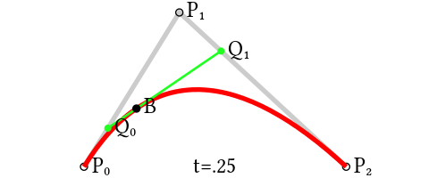
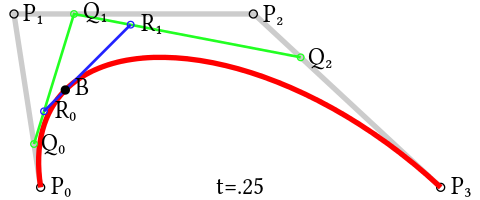

Héctor Francisco Hernández
(a.k.a. Tito)
 Senior Software Engineer
Senior Software Engineer
Bézier curves intro
In computer graphics, Bézier curves are defined by N points in the plane or space and built using a recursive method.
I don't focus here in how to implement an optimum algorithm for drawing Bézier curves, but just the logic behind their construction.
Linear Bézier curves
The most basic Bézier curve is defined by two points in the plane or space. In fact, it's not a curve, it consists of a straight line that goes from point P0 to point P1.
We could say that this curve is the line described by all the points that results from applying the following function:
P0 + (P1 - P0) * t with t being all the numbers between 0 and 1.
( this is the same that P0 + P1 * t - P0 * t or P0 * (1 - t) + P1 * t )
If you want to draw it programming, just iterate over t and calculate and draw the points with the formula above.

Quadratic Bézier curves
Now it gets more interesting.
This curve is defined by three points in the plane or space. Let's suppose P0, P1 and P2. Again we will have t in a range from 0 to 1.
We get two line segments, P0P1 and P1P2. Let's take the "t" point for P0P1 segment, let's call it Q0 for the sake of example, and the "t" point for P1P2 segment, Q1. We have a new segment Q0Q1.
Let's calculate and draw the "t" point for it, as it is one of the points that belongs to the curve.
Let's repeat the operation for every "t" between 0 and 1.

Cubic Bézier curves
I guess we have already got Pierre Bézier's idea with quadratic curves.
In this case we have four points: P0, P1, P2, P3. So we have three line segments: P0P1, P1P2 and P2P3.
We'll get the "t" point for those segments: Q0, Q1 and Q2.
Now we have one extra step: we need to get the "t" point for Q0Q1 and Q1Q2 segments: R0 and R1.
Finally let's draw the "t" point for R0R1 and repeat the process for "t" between 0 and 1.

Higher degree Bézier curves
So far, we have built Bézier curves with degree one (linear), two (quadratic) and three (cubic).
But the same applied recursive method could be used with any degree curve.
Following animations show the construction of degree four and five curves: